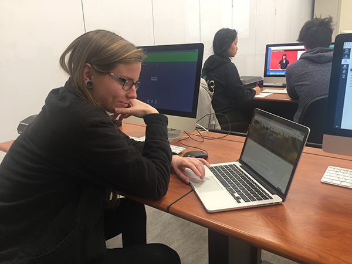

· Impression of Hangzhou ·
- User likes to skip long text information.
- User likes clear navigation options.
- User needs to have enough options to jump to a specific section
- User needs hightlight of links to know which page they are staying at.
- User needs clear guidlines to learn features such as tooltips when hover on an element.
- User needs to be able to create their own schedules.
- User needs image when browsing.
- User needs back buttons when they want to revisit the previous pages.
- User needs short loading time.
- User needs to access map when offline.
